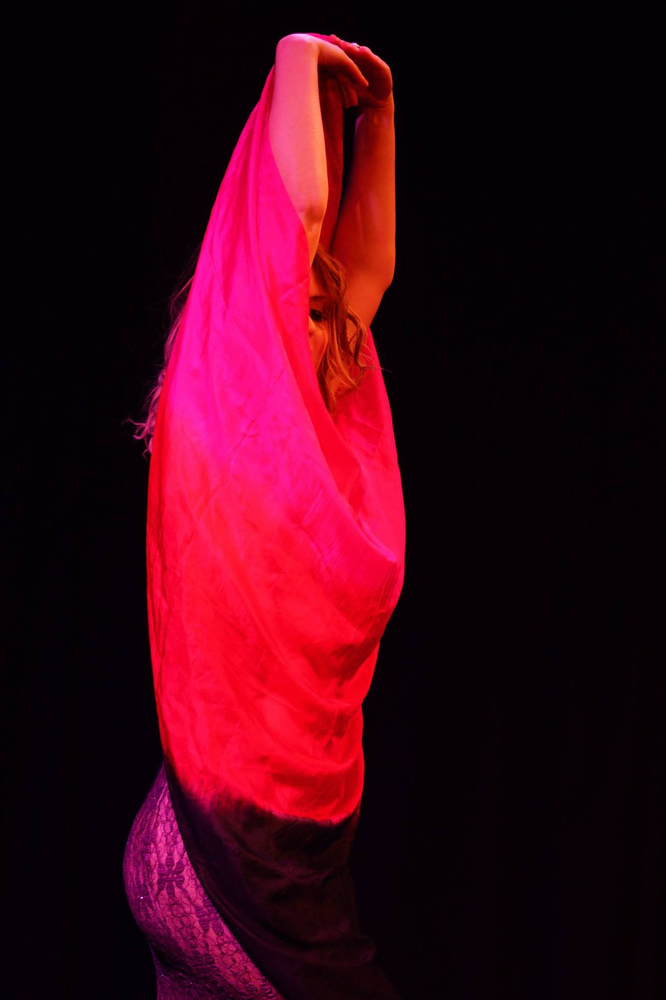

Szolgáltatásaim
Intelligens masszázs manuális kezelések
Tanulmányaimat 2009 óta gyakorlom és fejlesztem. Gyógymasszőrként végeztem. Több technikát módszert alkalmazom. A holisztikusságot, az emberközpontúságot, az egyénre szabott terápiákat, és a pozitív hozzáállást szeretném leginkább megadni a hozzám fordulóknak.
Kezeléseim célja a fájdalmak csillapítása, és a jó közérzet fenntartása, valamint a fájdalommentes, könnyed mozgás elérése a mindennapokban. Ezen felül célom helyreállítani az ízületek mozgási terjedelmét, javítani a koordinációt és funkciót, csökkenteni az izomgörcsöket és feszültségeket, elősegíteni a helyes testtartást.

Gerinctréning
Rendkívül precízen és hatékonyan felépített foglalkozás. Egy különleges gerinctornáról van szó. Célja a preventív gerincvédelem élvezetes formában. A gerinctorna eredményessége abban rejlik, hogy a gyakorlatok egyre pontosabb kivitelezésével a gerinc élettani görbületeit megtámasztó izmokat megerősíti, a megrövidült izmokat megnyújtja. Mobilizációs, egyensúly és koordinációs képességet fejlesztő gyakorlatokat is tartalmaz. Mindezek hatásaként az ízületeket erős, rugalmas izmok támasztják meg, tehermentesítve a szalagokat és a gerinc porckorongjait. Zenés mozgásfoglalkozás. A gerinctréning mindenkinek ajánlott preventív mozgásmódszer – irodai munkát végzőknek, időseknek, kismamáknak egyaránt.
Online órák heti rendszerességgel. facebook csoporton belül elérhetőek 1 hétig !! Igény szerint youtube linken küldve megoldható heti rendszerességgel.
Magán órák teremben és online is bejelentkezés alapján.
Az órák időpontjáról érdeklődj elérhetőségeim egyikén.

Orientális tánc, mint terápia
Kiemelnék a rengeteg jótékony hatás mellet pár nagyon fontos tényezőt: A test tudat "tanítása"a foglalkozásaim fontos része. A test ismerete, a testtudat tanulható, a saját teste mindenki számára megismerhető. Elcsépelt szó napjainkban, mindeközben nagyon kevesek azok akik valóban tudatosak a testükkel kapcsolatban. A tanfolyam fejleszti a tánc, a mozgáskoordinációt, önképet. Tartásjavító, fejleszti a hajlékonyságot. Örömet ad. Nőgyógyászati betegségek kiegészítője
ONLINE ÓRÁK, KÉNYELMESEN AZ OTTHONODBÓL.
Az órák időpontjáról érdeklődj elérhetőségeim egyikén.
Kismama hastánc
Tánc közben figyelünk a helyes testtartásra,csökken a csigolyákra gyakorolt nyomás,és ez enyhíti a hátfájást. A nőies mozdulatok segítenek abban, hogy elfogadjuk testünk változását, ellazuljunk, levezessük a felgyülemlett feszültséget. Ami különösen fontos, hogy a táncmozdulatok által a kismama kapcsolatba kerül a babával,mivel a mozgás által a figyelme a hasára fókuszál.
Az órákon igény szerint talajon intim tornával, könnyedd erősítéssel színesítem az alkalmakat.
Óra végén hosszabb nyújtással és relaxációval zárunk.
ONLINE ÓRÁK, KÉNYELMESEN AZ OTTHONODBÓL.
Az órák időpontjáról érdeklődj elérhetőségeim egyikén

Életvezetési tanácsadás
Életút elemzés, sorselemzés.
Tanácsadásom során, célom a személy hozzásegítése útjának megtalálásához. Legjobb tudásom szerint elkísérni „felszabadulást” hozó oldásaihoz. Általános, életút elemzés során erősségeink, gyengeségeink, tulajdonságaink, életcélunk feltérképezésével foglalkozunk.
Akadályaink, problémáink több szinten kereshetőek (énállapot, családdinamika, pszichológia, karma, energetika).
Ezen felül, amiben segíteni tudok: (az asztrológia tudománya sokrétű.) Éves előrejelzés, kapcsolati összevetés, megfelelő időpont keresés egy fontosabb eseményhez stb.
Ha úgy érzed, hogy szükséged van ezekre az információkra, várlak szeretettel!